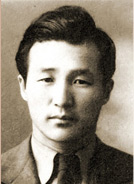
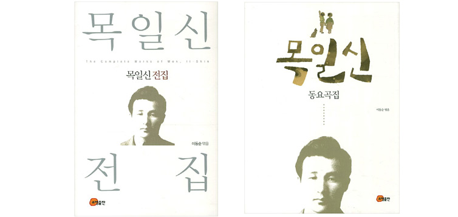
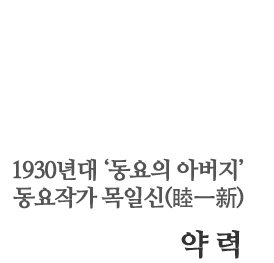
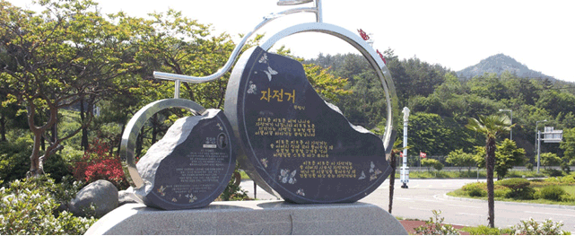

동요작가 목일신은 전라남도 고흥군 고흥읍 서문리에서 태어났다. 본관은 사천(泗川), 호는 은성(隱星)이며, 김부암(金富岩)·김소영·목옥순(睦玉順)을 필명으로 사용하였이다. 초등학교 5학년 때인 1926년 《동아일보》에 동시 〈산시내〉를 발표하였다. 1928년 고흥공립보통학교를 졸업한 뒤 전주 신흥중학교에 입학하였으며, 이해에 〈누가 누가 잠자나〉를 지었다. 1929년 광주학생운동에 참가하였다가 1개월간 복역하였다.
1931년 《조선일보》 신춘문예에 동시 〈시골〉이 당선되었고, 이듬해 신춘문예에서도 《조선일보》에 동시 〈물레방아〉와 가요〈새날의 청춘〉이, 《내일신보》에 시 〈영춘곡(迎春曲)〉이 잇달아 당선되었다. 1937년 일본 오사카의 간사이대학[關西大學]을 졸업한 뒤 동화방송에서 근무하다가 1943년 순천 매산고등학교, 1948년 목포여자중고등학교, 1954년 서울 이화여자고등학교, 1958년 배화여자중고등학교 교사로 부임하여 1978년 퇴직하였다.
〈자전거〉〈자장가〉〈비누방울〉〈아롱다롱 나비야〉〈산비둘기〉〈참새〉〈시냇물〉〈물결은 출렁출렁〉 등 초등학교 교과서에 실린 많은 동시를 지었으며, 한국아동문학가협의회 부회장과 한국음악저작권협의회 이사 등을 지냈다. 1960년 이후 경기도 부천군 소사읍 범박리(지금의 부천시 소사구 범박동) 신앙촌으로 이주하여 사망할 때까지 거주하였다. 부천시 원미구 중동에 있는 부천중앙공원에 시비(詩碑)가 세워졌고, 전라남도 고흥군에도 〈누가 누가 잠자나〉 노래비가 세워졌다.



- 1913
- 전남 고흥군 고흥읍 서문리 425번지에서 출생(1월 18일)
- 1926
- 고흥공립보통학교 5학년 동아일보에 ‘산시내’ 발표, ‘자전거’ 작사
- 1928
- 고흥공립보통학교(현 고흥동초등학교) 졸업, 전주신흥중학교 입학
- 1929
- 광주학생사건으로 투옥
- 1930
- 동아일보 신춘문예에 동요 ‘참새’ 당선
- 1931
- 조선일보 신춘문예에 동요 ‘시골’ 당선
- 1932
- 전주 신흥중학교 졸업
조선일보 신춘문예에 동요 ‘물레방아’, 가요 ‘새날의 청춘’ 당선,
매일신보 신춘문예에 ‘영춘곡’ 당선 - 1933
- 월간 영화시대 현상모집에 시 ‘낙화 당선,
오케레코드사 현상모집에 가요 ‘명사십리’ 당선
콜롬비아레코드사 현상모집에 ‘뱃노래’, 청춘가‘ 당선 - 1937
- 일본 관서대학 문과 졸업, KBS전신 JODK 근무
- 1943
- 순천 매산중 국어교사 부임
- 1948
- 목포여중 교사 부임
- 1954
- 이화여고 교사 부임
- 1955
- 대한일보 현상모집에 국민가요 ‘대한의 노래’ 당선
- 1956
- 초등학교 교과서에 ‘비누방울’ 수록, 음악교과서에 자전거,
누가누가잠자나, 자장가, 아롱다롱 나비야, 산비둘기, 참새,
시냇물, 물결은 출렁출렁 등 수록 - 1957
- 동요집 ‘물레방아’ 발간(광주 국학도서출판관)
- 1958
- 배화여중고 교사 부임
- 1960
- 부천시 범박동에 이주
- 1967
- 정경자 여사와 결혼
- 1977
- 고흥동초등학교에 노래비 제막(누가누가잠자나)
- 1978
- 배화여중고교 정년퇴임, 국민포장 수상
- 1986
- 부천시 범박동에서 작고(10월 12일)
- 1992
- 건국훈장 애족장 추서
- 2000
- 동요집 ‘찌르릉 찌르릉 비켜나세요’ 출간(부천문화원)
- 2009
- 고흥문화회관에 시비 제막(자전거)
- 2010
- 제1회 고흥 목일신동요제 개최(고흥군)
- 2011
- 제2회 고흥 목일신동요제 개최, 목일신동시집 발간(고흥군),
고흥동초교 개교100주년 기념식에서 ‘자랑스러운 고흥동초등인상’ 수상